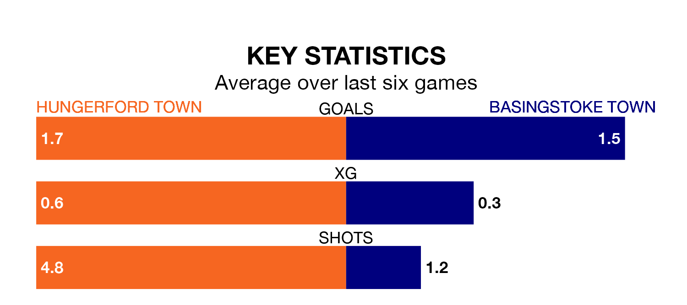

Hungerford Town host Basingstoke Town on Saturday at Bulpit Lane in the Southern League Premier South.
In their last league match, on April 20, Hungerford lost to Hanwell Town 1-0 away.
Basingstoke won, 3-1 at home against Dorchester Town.
With 73 goals in 40 games so far this season, Hungerford are scoring more than average in the league with 1.8 goals per game. But they are conceding more than average too, letting in 70 goals at a rate of 1.8 per game.
Basingstoke are also above average scorers, with 1.7 goals per game, compared to a league average of 1.6. They have conceded 2.0 goals per game.
Hungerford Town are eighth in the table after 40 games, of which they have won 16 and drawn 10, earning 58 points.
Basingstoke Town are three places behind the hosts in 11th, with 15 wins and eight draws putting them on 53 points.
Hungerford are in mixed form in the Southern League Premier South, with three wins and three losses from their last six games.
With two wins and a draw over that period, the away side's form is slightly worse – they have taken seven points from 18, compared to Hungerford's nine.
Updated: 07:59 (UTC), 26/04/24